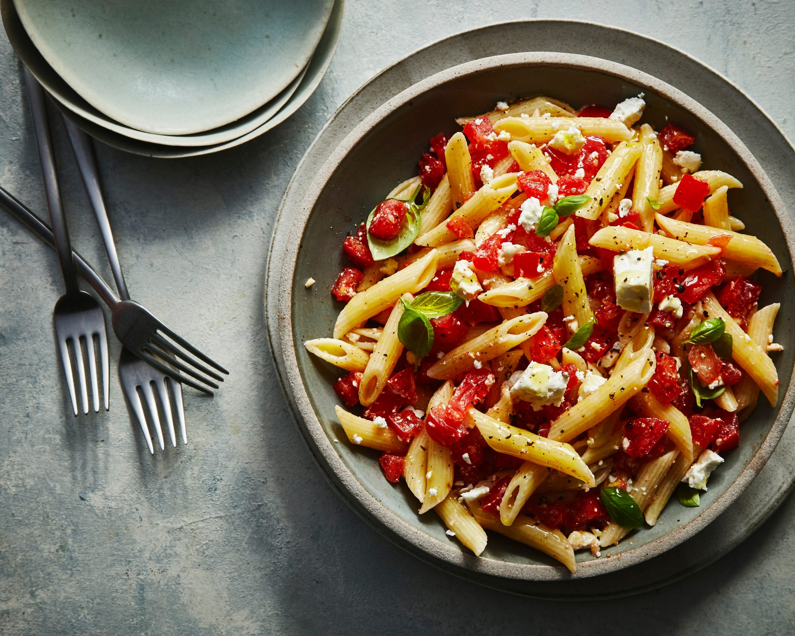

Pasta today
Recipe for pasta

Ingredients
- 1 lb/500 g dried spaghetti (or other long pasta)
PASTA WITH OLIVE OIL & GARLIC (AGLIO E OLIO):
- 1/2 cup extra virgin olive oil
- 10 garlic cloves , sliced
- 1 tbsp red chilli flakes
- 1/4 cup chopped parsley
Method
BASE DIRECTIONS
- Cook 1lb/500g of dried spaghetti (or any other long dried pasta) in a large pot of salted boiling water per packet MINUS 1 minute.
- Meanwhile, prepare OLIVE OIL & GARLIC (AGLIO E OLIO)
- When pasta is ready, scoop out 1 cup of pasta cooking water, and drain pasta.
- Add pasta into chosen sauce with 3/4 cup pasta cooking water. Toss pasta until sauce thickens and sticks to pasta (called "emulsifying" the sauce), 1 - 2 minutes. Use more pasta water if needed to loosen sauce.
- Season with salt and pepper to taste. Finish pasta per chosen recipe.
PASTA WITH OLIVE OIL & GARLIC (AGLIO E OLIO):
- Heat oil over medium high heat. Add garlic and cook until golden - be careful not to burn it.
- Toss with pasta and cooking water per Base Directions. Toss through parsley and chilli flakes, serve with parmesan.